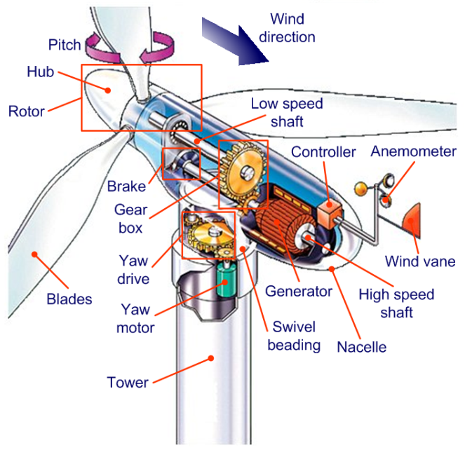
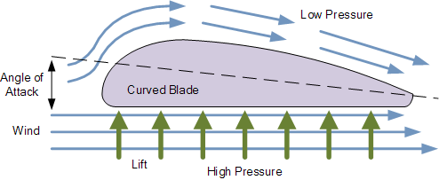

A wind turbine is a device that converts the wind's kinetic energy into electrical power. This is how it works ...
1. The blades of the turbine turn around the rotor as the wind blows.
2. The turning of the blades causes the low-speed shaft to rotate.
3. The low-speed rotation of the blades means not a sufficient amount of electricity can be produced to be connected to the generator. This results in the addition of a gearbox (which connects the low-speed shaft and the high-speed shaft) to increase the speed of the rotation therefore increasing the amount of electricity produced by the generator.
4. Due to the fact the wind can change direction at any time, the anemometer is situated on top of the nacelle to measure the wind speed and direction.
5. This information is then sent to the controller which then sends a responding signal to the yawing mechanism which keeps the turbine facing the wind when the direction changes.
6. This allows the maximum amount of rotation of the blades under the surrounding conditions.
How does it turn?
The air sliding along the upper surface of the wing will move faster than on the lower surface. This is because the air on either side of the curved blade (above and below) has to meet at the end of the blade at the same time. The upper side of the blade (the curved section) means that the air has longer to travel to meet with the air on the underside which travels along a flat surface. This results in the air moving faster on the curved side to meet the other side in the same amount of time. This higher speed results in a lower pressure on the upper, curved surface and a higher pressure on the bottom, flatter surface. This creates lift, the driving force of the wind turbine, causing the blade to move upwards therefore creating the rotating effect.
 To go places and do things that have never been done before – that’s what living is all about.Controlling the Blades
Stall Controlled Wind Turbines:
This is when the turbine has been aerodynamically designed so that when the wind speed becomes too high, turbulence is created on the side of the rotor blade which is not facing the wind. This stall prevents the lifting force of the rotor blade from acting on the rotor.
Pitch Controlled Wind Turbines:
When the power output becomes too high (usually above 250 kW), it sends a signal or order to the blade pitch mechanism which immediately turns (pitches) the rotor blades out of the wind. Furthermore, the blades are turned back into the wind whenever the wind drops again. There are also wind turbines where the blade tips turn rather than the whole blade. This is a less efficient method however it is cheaper.